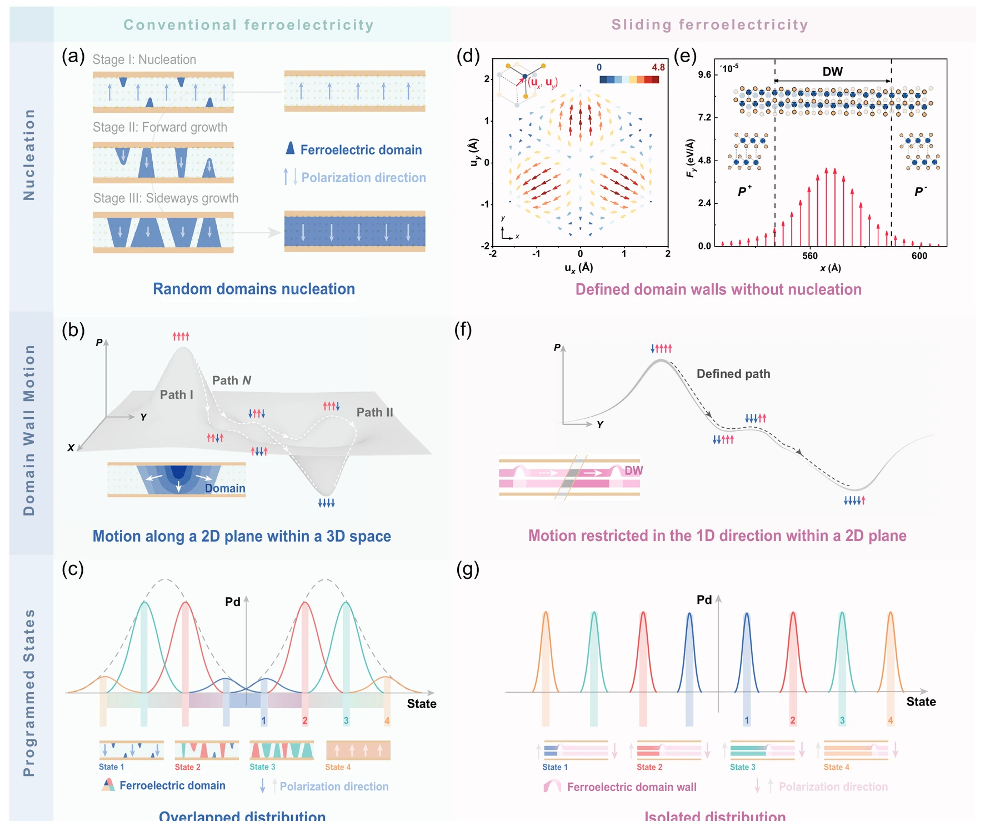

真正动的，到底是谁？
AB → BA 的能量路径很容易让人脑补成“两整层一起横着滑”。但低 sliding barrier 只回答“沿一条指定路径走贵不贵”，没有回答更关键的动力学问题：一个沿 z 的电场，凭什么产生 x–y 平面的启动运动？
原文来自项目 Drive 中 Wang & Dong 2025、Ke et al. 2025、Chen et al. 2026、Liu et al. 2026 的正式 PDF。原文全部为可选择 HTML text；这里只保留科学 Figure，不再使用段落截图。
1 · 低 barrier ≠ 面外场能直接把完整单畴推着滑
先把“路径”和“驱动力”分开。能量面可以告诉你 AB→SP→BA 哪条路更低，但如果初始 AB/BA 保持三重旋转对称性，面外电场本身并不能选中三个等价面内方向中的一个。Wang & Dong 把这个问题写成 Born effective charge tensor：需要非对角响应，Ez 才能产生面内力。
The zero value of the off-diagonal Born effective charges at the initial and end states is due to the in-plane C3 rotational symmetry of the hexagonal lattice.
An out-of-plane electric field can not break the C3 rotational symmetry, and thus can not determine which one of the three equivalent sliding paths is preferred.
2 · Domain wall 的关键不是“边界”二字，而是它局域打破了 C₃
墙内原子的 stacking environment 连续偏离 AB/BA 高对称极小值。Ke、Liu 与 Liu 2025 的核心结果是：非对角 BEC 与净面内力恰好集中在这种 symmetry-broken region，而完整 domain interior 基本不获得相同的 lateral drive。
Importantly, only atoms at the DWs, which break the C3 symmetry, possess nonzero off-diagonal BEC elements, enabling the generation of net in-plane forces that drive DW motion.
Sliding ferroelectrics restrict switching to atoms near DWs, while those within domains remain inert.

这套图像保留了什么
真实有限宽 DW、局域 stacking displacement、非对角 BEC、field-induced lateral force，以及 wall propagation。
还没有回答什么
真实样品里哪个 defect pin 住 wall、阈值分布怎样、低场是不是 creep、临界附近 β/ζ/ν 是多少。
3 · Chen 2026：在其 3R-MoS₂ 条件下，switching 被压到已有 DW 上
Chen 等把 MD、KPFM 和器件测量放在一起：单畴内部的原子不承担相同的 lateral drive，已有 DW 沿受限方向移动；更重要的是，他们专门比较 bias 打在 domain interior 与 wall 附近的结果。
This domain-nucleation-free property in sliding ferroelectrics allows the control of polarization switching to shift entirely to DW motion, thereby defining a new paradigm, “no domain wall, no polarization reversal.”
Repeated dc bias within a single domain induces no DW motion, whereas a single dc bias at the wall readily drives domain expansion or contraction.

4 · Baek 2026：但“必须先有 DW”不是所有 3R-TMD 的一般定律
这里必须主动制造一次“文献张力”。Baek 等研究 fully commensurate、single-domain 3R-TMD bilayers：与人工堆叠后常见的 poly-domain 样品不同，single-domain 样品没有预存 DW/AA network，却仍表现出稳定的 sliding-ferroelectric hysteresis。作者据此把两类样品区分成两种 switching picture：poly-domain 情形通过 DW migration 逐步完成，而 fully commensurate single-domain 情形可以发生 DW-free switching。
这真正改变了什么
“pre-existing DW 是一种很重要、甚至在许多样品中占主导的 switching pathway”仍然成立；但它不能再被升级成所有 sliding FE 的必要条件。domain structure、commensurability、strain preparation 与可用的 symmetry-breaking pathway 都可能改变真正的 switching object。
这没有自动证明什么
DW-free hysteresis 本身并不告诉我们 microscopic collective-sliding trajectory 的全部细节，也不意味着 poly-domain 样品中的 DW/pinning 可以忽略。两类结构应被视为不同实验条件，而不是硬拼成一个唯一机制。
5 · 真正把 DW 故事接到 disorder 的，是 wall 在 bubble / rough edge 前停下来
KPFM 里，墙遇到 bubble 会产生局域弯曲；提高 bias 后可以越过障碍。rough edge 上也能看到重复的 pinning / depinning。这里才开始与 Module 04 的“real wall in a landscape”真正接上。

作者真正证明了什么
真实 3R-MoS₂ 中已有 DW 可以被局域电场移动；bubble / rough edge 会约束 wall 并产生明显 pinning/depinning 行为。
作者没有证明什么
单张 KPFM 前后图不能给出 β、ζ、ν，也不能仅凭“越过障碍”判断 wall 属于 QEW、RFIM 或其他 universality class。
6 · Liu 2026：device-scale Raman map 让“单一 coercive field”变得可疑
Shear-mode Raman 直接追踪 stacking degree of freedom。一个 flake 会被机械边界分成多个独立响应区域；不同区域、不同 cycle 的 intermediate-state dwell time 与 apparent critical field 都会变化。这说明 device hysteresis 背后不是一个均匀 intrinsic Ec。
The dwell time of intermediate states varies widely, indicating that pinning sites strongly influence the dynamics.
Such variations in the apparent critical field were frequently observed, indicating that microscopic details of the switching can vary between cycles due to pinning by defects.

先问是不是多个 region / interface 依次释放，不要立刻把每一步解释成新的 bulk phase。
先问 local pinning、screening、history 和 device segmentation；不要默认它是一个唯一 intrinsic material constant。
clean / superlubric mobility 与 disorder-limited creep/depinning 是两层问题；后者需要明确的 quenched landscape 和 scaling observables。
7 · 这一章应该留下的边界
现在已经很强
在许多 poly-domain / wall-containing sliding-FE 样品中，pre-existing DW 是核心 switching 自由度；局域 symmetry breaking 可提供 lateral drive，真实 pinning sites 会改变 wall 路径与 apparent switching field。fully commensurate single-domain 样品说明这不是无条件的一般定律。
下一章才开始
一旦 wall 面对 quenched landscape，就要用 velocity、roughness、waiting time、threshold distribution 去区分 pinning、creep 与 critical depinning。